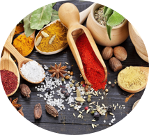

You put too much salt!


ChefUp: Pastaria!

Do you have what it takes to cook at my pastaria?
Let's make a simple chicken pasta recipe. Before you can be a real pasta chef, you have to learn the skills of cooking.
Ace all the skills to get to the final level.


Learning how to season properly means that the flavor of your dish can be heightened with components like salt, acidity, bitterness, etc.
Professional chefs often say that the biggest difference between home cooks and chefs is seasoning.
However, seasoning properly, though it takes some practice, isn't all that hard. Once you learn a few tricks to getting salt, acidity and savoury in balance, you'll be seasoning like a pro.
Press space to put some salt


You need to know this for the final level!
The amounts of spices given in a recipe are usually just a guideline. You may want more or less depending on the freshness and quality of your spices, and on your personal taste.
If the flavors still don't shine after we've already added salt and adjusted the spices, the next option is to add a bit of acid. Lemon juice is our top choice, but another citruses, vinegar, wine, or a splash of hot sauce are also work well.
Holding a knife

This is how you hold a knife.
Before you start chopping anything, you want to make sure you're holding the knife correctly.
This means putting your finger and your thumb at the very back of the knife and wrapping your fingers around the handle.
Use your mouse to cut.


Remember, before you start chopping anything, you want to make sure you're holding the knife correctly.
Press space to cut. Don't cut your fingers!


You need to know this for the final level!
The ideal position for the helping hand is called the bear claw, with the fingertips curled under and knuckles pressing down on the ingredient to keep it from rolling or sliding.
Yes! The palm of the hand chokes up on the handle, while the thumb and index finger grip the top of the blade.

It’s essential to know when something is cooked, otherwise the texture and flavor will stop your dish in its tracks.
Chicken and Pork: They will have a harder texture and there will no pink color left. Generally, about 6 minutes per side, depending on thickness. Be sure to check by either using a thermometer or cutting into the thickest part.
Pasta: Scoop out a piece and take a bite. If you still see a white ring in spaghetti or if the pasta itself still is white and crunchy, it is not ready. Always check the box for cook times.
Fish: Depends but when a thin knife inserted into the fish meets no resistance, your fish is likely done.
Click to see the doneness of the pasta!

You need to know this for the final level!
Depending on your preferred texture and doneness, there are different internal temperatures that beef can be cooked to. In addition to checking the temperature, you can also cut into the meat and see its level of doneness—medium-rare meat will be pink at the center but not raw. We always recommend making sure that your pan is nice and hot before adding the meat so you get that perfect sear. For timing, think 5 minutes for medium rare, and longer if you like it more well done.
Even if you are cooking something simple, managing your time efficiently is a key skill to have while cooking.
Combine tasks when you can and make use of down time. For example, you may be able to saute vegetables and make some rice at the same time.
If you have to cook many things at once, especially very time-sensitive items like meat or even for vegetables, set timers so that you don’t forget about something.
Click the meat when it is done


You need to know this for the final level!
By combining tasks. If a recipe calls for 20 minutes of waiting with occasionally stirring, then you have a little bit of time to do other things. You can even use it to wash dishes, set up the table, etc.
Being organized and planning ahead. Think about what recipes you want to make before you go grocery shopping. Once you have all of your ingredients you need to prep them – this is called mis-en-place.
Clean as You Go. The less cluttered your workstation is, the clearer your mind will be.
When making a good mixture or sauce, it is important to use good proportions. When you are making a sauce, make sure to mix all of the components together well so that there are no lumps or weird consistencies in the sauce, especially if there are dry and wet ingredients that you are mixing together.
1. First get the chicken!

You need to know this for the final level!
One of the simplest methods for mixing ingredients to make dough or batter for bread is by stirring the ingredients together in a bowl. A wooden spoon is the best utensil for mixing the ingredients in a bowl.
The general objectives in mixing batters and dough are uniform distribution of ingredients, minimum loss of the leavening agent, optimum blending, and development or prevention of gluten.